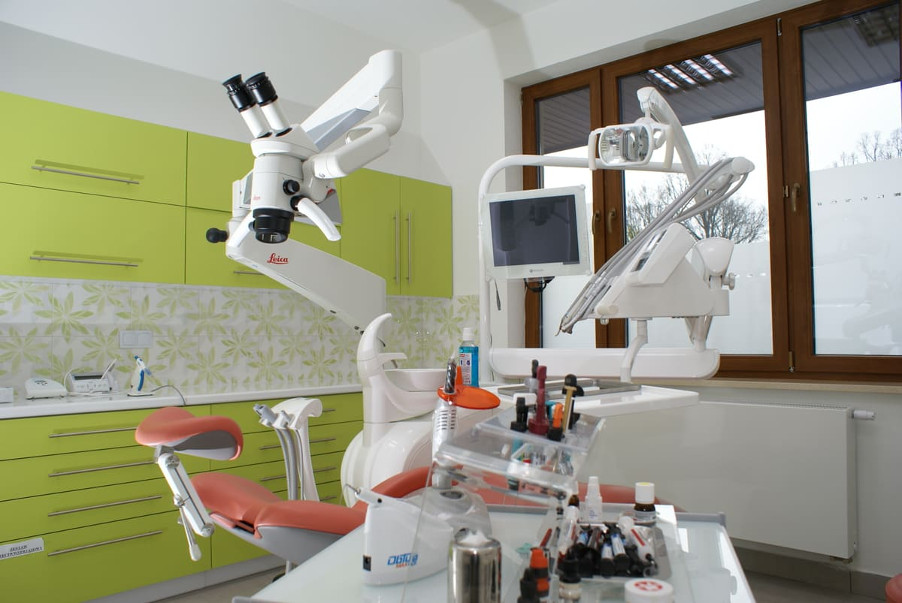
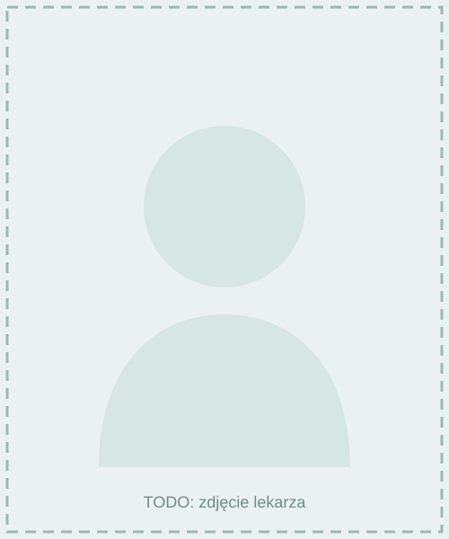
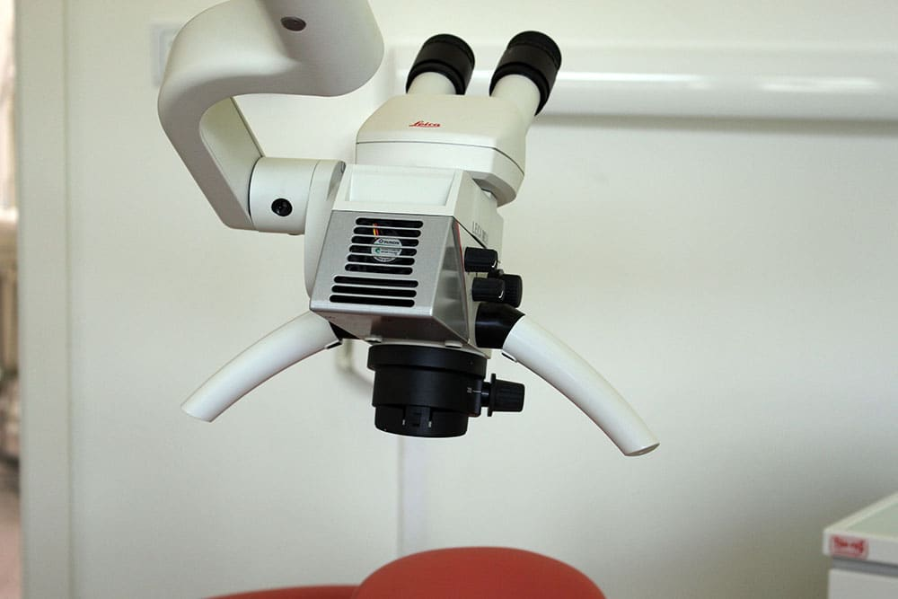
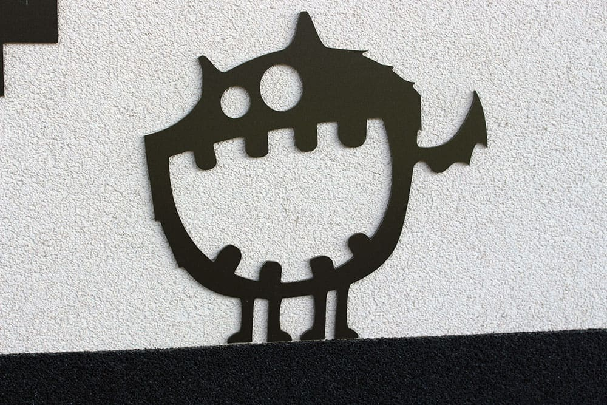
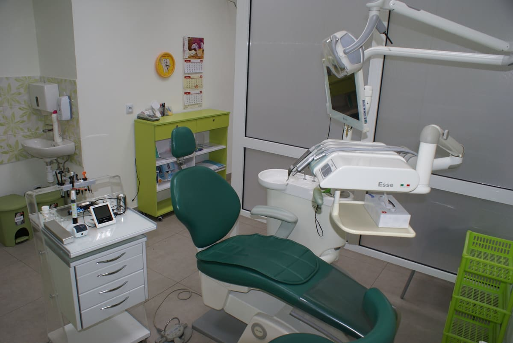

O nas
Poznaj zespół i wartości, którymi kierujemy się każdego dnia w Stomatologii Przy Cisowej.
Nasza historia
Od początku istnienia gabinetu nasza strategia opiera się na zapewnieniu profesjonalnego poziomu świadczonych usług i indywidualnego podejścia do każdego pacjenta. To pacjent wymaga od swojego lekarza, by był jego osobistym doradcą z zakresu leczenia, a także jego ekspertem od wizerunku. Lekarz wspiera pacjenta w jego dziele inwestowania w siebie, w profilaktykę, ograniczając z czasem zabiegi związane z „naprawą” czy „rekonstrukcją” uzębienia.
Pracujemy w zespole stomatologów specjalistów, świadcząc usługi w praktyce prywatnej. Nasi lekarze są wykładowcami Uniwersytetu Medycznego w Lublinie, a urządzenia spełniają europejskie normy i wytyczne jakościowe.
Zależy nam, by przychodzili Państwo do nas z przyjemnością i wychodzili z radością.
— Zespół Stomatologii Przy Cisowej
Dlaczego my
- Praca od rana do wieczora
- Ponad 20 lat doświadczenia
- Znieczulenie, w tym komputerowe
- Profesjonalna i miła obsługa
- Pracujemy na najlepszym sprzęcie
- Przyjmujemy płatność gotówką

Poznaj lekarzy
Czworo specjalistów, w tym dwie wykładowczynie Uniwersytetu Medycznego w Lublinie.

dr n. med. Jolanta Wojciechowicz
Wykładowca Uniwersytetu Medycznego w Lublinie, specjalista chirurgii stomatologicznej i szczękowo-twarzowej
Godziny przyjęć: wtorek od godziny 13:00.
lek. stom. Beata Bednarczyk
Specjalista stomatologii zachowawczej i pedodoncji
Godziny przyjęć: poniedziałek 12:00–19:00, wtorek 8:00–13:00, środa 11:00–17:00, czwartek 12:00–19:00, piątek (co drugi) 8:00–13:00.
dr n. med. Elżbieta Czelej
Wykładowca Uniwersytetu Medycznego w Lublinie, specjalizuje się w leczeniu protetycznym
Godziny przyjęć: wtorek, czwartek 14:00–19:00.
lek. stom. Iwona Bielak
Specjalista stomatologii ogólnej
Godziny przyjęć: poniedziałek 12:00–19:00, wtorek/środa/czwartek 8:00–13:00, piątek (co drugi) 8:00–12:00.
Zajrzyj do środka



Poznaj nas osobiście
Umów wizytę i przekonaj się, że wizyta u dentysty może być komfortowym doświadczeniem.